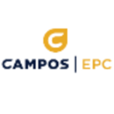

Internship Experience
Data Science Intern
June 2019 - August 2019
-
Worked within the Data Analytics department to analyze the CRM (Customer Relationship Management) database tables to ensure consistency with original data sources throughout the MEPS region.
- Aggregated summaries of various data tables using Python and Power BI to provide master clean files to be used for data analysis within various departments.
-
Provided representations of various data structures using Entity Relationship diagrams (ERDs) to facilitate visualization of data within the Data Analytics team.
AI Intern
June 2018 - August 2018
-
Learned how to parse, extract, and analyze data from HTML webpages using Beautiful Soup in Python at a local student-run startup.
-
Became familiar with artificial intelligence development tools (OpenCV and TensorFlow) and used them to detect objects and text in real time using a camera.

Elec. Eng. Intern
June 2017 - August 2017
-
Taught and overviewed on the process of directional drilling, pipeline pigging, and the general process of supplying gas to households.
-
Worked with and shadowed the principal electrical engineer to update and assure quality of the relevant stations’ P&ID’s.
-
Developed spreadsheets with respect to the P&ID’s to ensure compliance with industry standards.